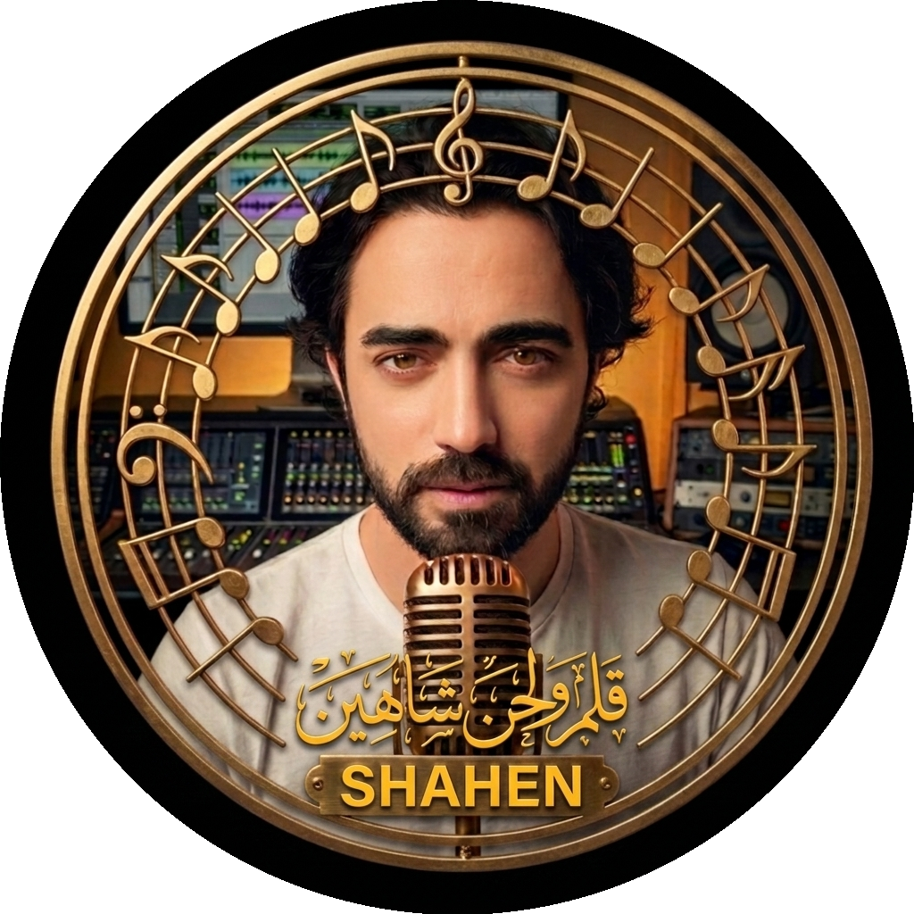

أنا شاهين، فنان سوري، أكتب وأؤلف وألحّن وأوزّع وأنتج أعمالي بنفسي من الفكرة الأولى حتى الإصدار النهائي. أعمل بروح الحرفي الذي لا يقبل بالخطأ، ولا يترك تفصيلًا للصدفة.
خلفيتي الشعرية تمتد عبر تقاليد عائلية في نظم الكلام، وارتباط عميق بالتراث الطربي العربي (أم كلثوم، جورج وسوف، ميادة الحناوي). من هذا الأساس الكلاسيكي، أبني إنتاجًا معاصرًا متعدد اللهجات (شامي، مصري، خليجي، مغربي، عراقي، فصحى) ومتعدد اللغات (عربي، إنجليزي، فرنسي، إسباني).
أستخدم أدوات الذكاء الاصطناعي كأدواتٍ للتنفيذ فقط — أما الرؤية الفنية والتوجيه الكامل فهو نتاج مباشر لتفكيري وذوقي كمخرج إبداعي لكل عمل.
ست هويات لحنية أسستها كبصمة صوتية مميزة لأعمالي.
الهوية الأصلية — طربي شرقي أصيل بروح معاصرة.
امتداد مغربي نابض بالحيوية والإيقاع.
دفء شامي حميمي، للحن والحزن العميق.
الصوت هو البطل — شجن عراقي أصيل بلا منافس.
بوب شامي عصري، لازمة تلتصق بالذهن من أول استماع.
القاعدة العامة لاندماج الشرق والعالمية، تتطوّع حسب كل عمل.
اضغط على أي ديوان للانتقال المباشر لصفحة القصائد والقراءة الكاملة:
سيتم إضافة الأعمال بالتسلسل الزمني هنا — كل أغنية، تاريخ إصدارها، ولهجتها.